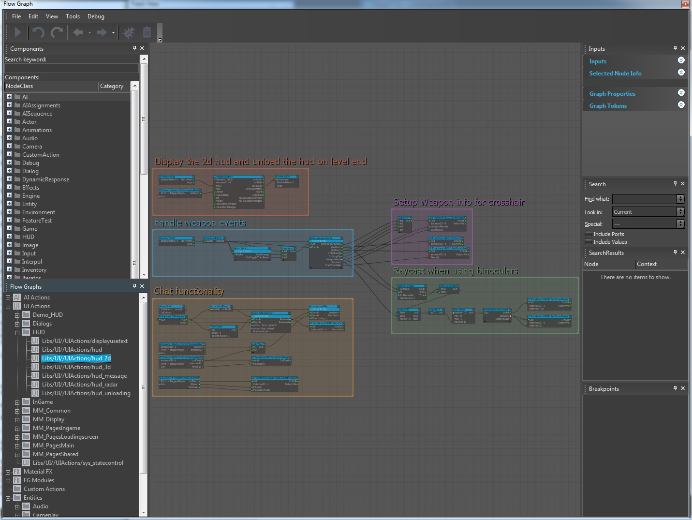
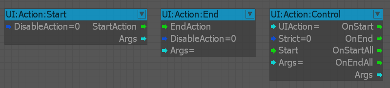

Overview
After introducing the concept of a UI Element in CRYENGINE, the next step is to review what we can actually do with these elements. Let us now introduce you to the concept of an UI Action.

UI Actions
An UI Action is a type of flowgraph, which main purpose is to encapsulate UI logic, so that it is easy to debug and maintain.
To create a new UI action, inside the flowgraph tool go to the drop down list at the top and choose "File->New UI Action...".
- All UI actions xml files need to be saved in
Game/Libs/UI/UIActions. - All UI actions are saved separate from the level. They need to be saved via File->Save in the flowgraph menu. Make sure to save every time you did some changes!
UI actions have some special properties:
- They are always loaded in memory and by default they are active (unless you disable them).
- To control an UI action use UI:Action:Start , UI:Action:End and UI:Action:Control.

UI:Action:Start
This is the entry point of every UI action.
- If the DisableAction port is set to FALSE, the action is not disabled (it is active when created). This is the default behavior. What this means is, that all the nodes / events contained in the UI graph will be active and they will trigger ports without any extra work.
- If the DisableAction port is set to TRUE, the action is disabled (not active when created). What this means is, all the nodes / events in the UI graph will not be active and they will not trigger any ports. In order to start the graph, the user needs to use the UI:Action:Control node to start the action or trigger it from C++ code.
- If the UI action has been triggered the StartAction output port is activated and the Args port contain the start parameters.
One UI action can contain multiple UI:Action:Start nodes.
UI:Action:End
This is the exit point of an UI action.
- Upon exit the user can disable the whole action (this will save processing power). To do that just set the DisableAction port to TRUE.
- Upon exit the user can pass return arguments to the caller, or c++ code if we are listening for a specific UI action.
One UI action can contain multiple UI:Action:End nodes.
UI:Action:Control
This node triggers an already created UI action.
- Input ports:
- UIAction port is the UI action, which will be triggered. You can pick the action from a list automatically populated by the engine. The Name of the graph, when you are creating it, defines the name of the action.
- Strict is used if you want to log an error, if the selected action doesn't exist.
- Start port triggers the action.
- Args are used to pass arguments to the action.
- Output ports:
- OnStart port will trigger if the specified UI action, has been successfully started by this node.
- OnEnd port will trigger, once the UI action started by this node reaches the UI:Action:End node.
- OnStartAll and OnEndAll ports will trigger, if an UI action with the specified name has started or ended, regardless of the fact whether it was started by this node or not.
- Args you can send parameters from the triggered UI action back to the caller (in this case our UI:Action:Control node). These are the arguments set in the UI:Action:End Args port.
Prototyping UI in Flowgraph
One way to use the functionality of the UI elements is to directly use the exposed functions / events in your level Flowgraph (MANUAL). This isn't an optimal approach for development. It maybe good for prototyping and quick testing of features, but it has some downsides:
- It forces you to export your level, even if you have made only changes to the UI in a minor way.
- If you decide to rename / remove something from an UI element, which is used in a level based flowgraph, this flowgraph logic will break and it wont execute.
- Using UI nodes directly in level flowgraph results in poor maintainability. You can no longer swap logically grouped UI nodes easily. You have to go and change this in all the places you copy pasted the nodes.
In order to solve the above issues and make development of the UI maintainable and easy to debug, CRYENGINE suggests that you use the UI Actions.